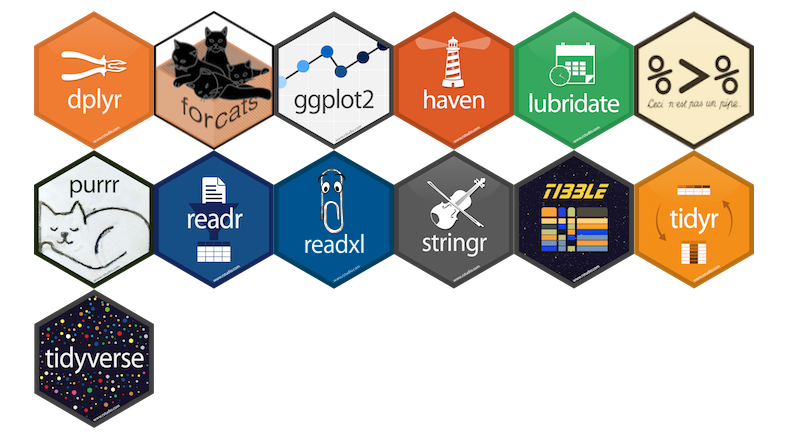

help("mean")
# or aquivalently
?mean3 Introduction to R
Abstract
This chapter provides a short introduction to the statistical programming language R–detached from the concept of reproducibility. In addition, it touches the ecosystem of R and the differences between base R and the tidyverse package collection. Finally, it provides an introduction to the concept of functions and loops in R.
3.1 What is R?
R is a free software environment for statistical computing and graphics. It compiles and runs on a wide variety of UNIX platforms, Windows and MacOS. (r-project.org)
Install R from https://cran.rstudio.com/
3.2 Short introduction to the language
To understand computations in R, two slogans are helpful:
- Everything that exists is an object.
- Everything that happens is a function call.
– John Chambers (creator of the S programming language)
For comprehensive introductions
The R Manuals: A re-styled version of the original R manuals
R for Data Science by Hadley Wickham and Garrett Grolemund
Hands-On Programming with R by Garrett Grolemund
3.2.1 Some Basics
Before looking at the data types and structures, there are a few basics you need to know.
- R has a help system to get help on functions and packages
- R is a calculator
sqrt(25) + 2^2[1] 9- R is case-sensitive
"name" == "Name"[1] FALSE3.2.2 Data Types
The basic data types in R are depicted in Table 3.1.
| Type | Description | Value (example) |
|---|---|---|
| Numeric | Numbers with decimal value or fraction | 3.7 |
| Integer | Counting numbers and their additive inverses | 2, -115 |
| Character | Letters enclosed by quotes in the output (aka string) | "Hello World!","4" |
| Logical | boolean | TRUE, FALSE |
| Factor | Categorial data - Level: characteristic value as seen by R - Label: designation of the characteristic attributes |
0, 1male,female |
| Complex1 | numbers with a real and an imaginary part | 2 + 3i |
| Special |
|
NANaNNULL |
You can check the class of an object with the class() function.
class(a)[1] "numeric"class(df)[1] "data.frame"3.2.3 Data Structures
R has five2 fundamental data structures: vectors, matrices, arrays, lists, and data frames.
A vector is…
- an one-dimensional array and
- the elements are of the same data type (here: numeric/integer)
TipMore on Handling Vectors
Create a vector with the c() function
Or a named vector…
Count the elements of items contained in vector
Vector indexing (by position)
Slicing vectors
Generate regular sequences using seq function
A matrix is…
- an two-dimensional array (rows and columns) and
- the elements are of the same data type (here: numeric/integer)
TipMore on Handling Matrices
An array is…
- a multi-dimensional data structure and
- the elements must be of the same data type
Dimensions can be 2D (matrix), 3D, or higher (see cran.r-project.org/doc/manuals)
TipMore on Handling Arrays
Create an array with the array function (here 3×4 matrix):
A 3D array (2 “sheets” of 3×4):
, , 1
[,1] [,2] [,3] [,4]
[1,] 1 4 7 10
[2,] 2 5 8 11
[3,] 3 6 9 12
, , 2
[,1] [,2] [,3] [,4]
[1,] 13 16 19 22
[2,] 14 17 20 23
[3,] 15 18 21 24Check the dimensions:
Indexing (row, column, layer):
[1] 8 [,1] [,2] [,3] [,4]
[1,] 13 16 19 22
[2,] 14 17 20 23
[3,] 15 18 21 24Slicing across dimensions:
A list is …
- an ordered collection of elements (order is preserved), and
- can contain elements of various data types
Lists are one-indexed (indexing starts with 1), which means that the first element of a list is accessed with index 1, not 0.
list("hi", 2, NULL)[[1]]
[1] "hi"
[[2]]
[1] 2
[[3]]
NULL
TipMore on Handling Lists
Create lists (with different elements, i.e., numbers and letters) with the list() function
Create a nested list…
l4 <- list(l1, l2, l3)
l4[[1]]
[[1]][[1]]
[1] 1 2 3 4 5
[[2]]
[[2]][[1]]
[1] "a" "b" "c" "d" "e"
[[3]]
[[3]][[1]]
[1] "A" "B" "C" "D" "E"…or a named (nested) list
$Numbers
$Numbers[[1]]
[1] 1 2 3 4 5
$SmallLetters
$SmallLetters[[1]]
[1] "a" "b" "c" "d" "e"
$CaptialLetters
$CaptialLetters[[1]]
[1] "A" "B" "C" "D" "E"Access list or nested list elements
l4[2][[1]]
[[1]][[1]]
[1] "a" "b" "c" "d" "e"l4[[2]][3][[1]]
NULLUnlist the list to get vector which contains all the atomic components
unlist(l1)[1] 1 2 3 4 5unlist(l4) [1] "1" "2" "3" "4" "5" "a" "b" "c" "d" "e" "A" "B" "C" "D" "E"Count amount of items contained in list
length(l4)[1] 3length(unlist(l4))[1] 15You might want to check
A data frame …
- consists of multiple columns, and
- each column may have a different data type
Usually, variables are stored in columns and units in rows.
TipMore on Handling Data Frames
id age sex
1 1 12 male
2 2 13 female
3 3 12 female
4 4 14 maleNumber of observations
nrow(ex_df)[1] 4Show dimension (rows, columns) of dataframe
dim(ex_df)[1] 4 3Column names
colnames(ex_df)[1] "id" "age" "sex"Show the first two rows of the dataframe
head(ex_df, 2) id age sex
1 1 12 male
2 2 13 femaleThe structure of an object can be checked using the str() function.
str(vec) num [1:3] 45 6 -83str(ex_df)'data.frame': 4 obs. of 3 variables:
$ id : int 1 2 3 4
$ age: num 12 13 12 14
$ sex: chr "male" "female" "female" "male"3.3 Base , Additional Packages and tidyverse
R has a large ecosystem of libraries (often called packages) that extend the functionality of base R. Base R itself consists of a set of packages that are loaded by default when you start an R session. These can be checked with the sessionInfo() function.
sessionInfo()$basePkgs[1] "stats" "graphics" "grDevices" "datasets" "utils" "methods"
[7] "base" On the Comprehensive R Archive Network (CRAN), there are innumerable packages available that can be installed and loaded to add specific functionalities such as enhanced data manipulation, specific data analyses (e.g., linear mixed models, structural equation modeling), or data visualization to R. The following example demonstrates how to install a package (i.e., ggplot2 for data visualization) from CRAN, and load it into a R session.
NoteModern package manager for R
You might also want to consider using the pak package (Csárdi & Hester, 2025) for installing packages. pak is a modern package manager and is a faster, a more efficient (e.g., regarding dependency management) and a more user-friendly (e.g., improved error handling) way to install and manage R packages than the install.packages() function.
For educational research, you may be interested in the following list of packages that are well established and can be used without concerns regarding their reliability and maintenance:
- dplyr (Wickham, François, et al., 2026) for data manipulation (see also below)
- psych (Revelle, 2026) for psychometric analyses
- survey (Lumley et al., 2025) for complex survey analysis
- lme4 (Bates et al., 2025) for linear mixed-effects models
- lavaan (Rosseel et al., 2025) for structural equation modeling
- ggplot2 (Wickham, Chang, et al., 2026) for data visualization
- …
Finally, there is the so-called tidyverse (Wickham, 2023) within R. The tidyverse is a collection of R packages (see Figure 3.1) that “share an underlying design philosophy, grammar, and data structures” and are (specifically) designed for data science.

Within the tidyverse package collection, the dplyr package (Wickham, François, et al., 2026) provides a set of convenient functions for manipulating data. Together with the pipe operator %>% from the magrittr package (Bache & Wickham, 2025), it is an extremely powerful approach to manipulate data in a clear and comprehensible way. The native3 R pipe |> was introduced with R v4.1.0 and since R 4.3.0, the base pipe provides all the features from magrittr.
TipWhat does the pipe operator |> do?
The tidyverse style guide suggests using the pipe operator “to emphasize a sequence of actions”. The pipe operator can be understood as “take the object and then” pass it to the next function. To illustrate the idea behind the pipe operator, we will use the following example dataset (ex_dat) which contains two numeric variables (X and Y).
In the following, the use of the base R pipe operator is demonstrated through a simple table creatation example.
- 1
-
Take the data frame
ex_datand then - 2
-
Select the variables:
XandYand then - 3
-
Calculate descriptive statistics using the
describefunction from thepsychpackage (Revelle, 2026) and then - 4
-
Create a table with the
kablefunction from theknitrpackage (Xie, 2025)
| vars | n | mean | sd | median | min | max | range | skew | kurtosis | se | |
|---|---|---|---|---|---|---|---|---|---|---|---|
| X | 1 | 100 | 2.03 | 0.96 | 1.99 | -0.61 | 4.62 | 5.23 | 0.10 | -0.14 | 0.1 |
| Y | 2 | 100 | 3.11 | 1.02 | 3.09 | 1.26 | 5.29 | 4.03 | 0.03 | -0.92 | 0.1 |
If you are convinced by the pipe approach, you can stop reading here and jump to the next section More about R Programming. If not, let us compare the pipe approach with two alternative ways to write the same code:
a nested approach
a sequential approach
The nested approach looks like this:
knitr::kable(psych::describe(ex_dat[, c("X", "Y")], fast=TRUE), digits = 2) …or, formatted:
Although, the second version slightly improves clarity through formatting, both versions require the reader to parse the code from the inside out. This is less readable and less intuitive than the pipe approach.
The sequential approach looks like this:
This approach is readable and intuitive because it explicitly separates all processing steps. However, creating a lot of so-called intermediate objects (i.e., ex_dat_sub, ex_descr), clutter the workspace/environment and becomes messy and difficult to comprehend when the project grows. To avoid this, you should consider putting such code sequences into self-written (wrapper) functions (see the next section What is a function in R?).
3.4 More about R Programming
When you are familiar with the basics of R, you might want to learn more about two fundamental programming concepts (in R):
- functions and
- loops.
The combination thereof allows you to automate repetitive tasks (e.g., calculating scale scores, running different analyses) which makes your code more efficient, easier to maintain, and enhances reproducibility. This idea is also highlighted in R for Data Science (2e), Chapter 25:
[…] Functions allow you to automate common tasks in a more powerful and general way than copy-and-pasting. Writing a function has four big advantages over using copy-and-paste:
You can give a function an evocative name that makes your code easier to understand.
As requirements change, you only need to update code in one place, instead of many.
You eliminate the chance of making incidental mistakes when you copy and paste (i.e. updating a variable name in one place, but not in another).
It makes it easier to reuse work from project-to-project, increasing your productivity over time.
3.4.1 Functions
3.4.1.1 What is a function in R?
TipDefinition: Function
A function is an object that may contain multiple related operations, statements and functions. These are executed in a predefined order.
In R, functions can be created using the function() statement and they consist of 3 parts:
- name of the function
- arguments and parameters: may vary across calls of the function
- body that contains the code which is executed across function calls
3.4.1.2 How to write a function?
To demonstrate how to write a function, we will use the following example. A common (repetitive) task is to recode item indicators. Consider two variables which need to be recoded (i.e., from 1 → 4, 2 → 3, 3 → 2, 4 → 1):
Provide a concise and meaningful name (here: rec_items). The name of the function object will–after defining the function–appear in the R environment.
Next, we need to define the inputs (also known as arguments or parameters) of the function. These inputs provide the necessary data and information and concurrently define how the function operates. The inputs are written within regular parentheses (...).
To recode an item, we need the following inputs:
- Dataset: A data frame containing the items.
- Item: A character input specifying the names of the items.
Optional: A function profits from input validation. This means we can include checks and error messages within the function body (e.g., check if the dataset is a data frame, check if the item exists in the dataset, etc.).
Third, provide the actual code in the body of the function. This code is written inside the curly brackets { }. Do not forget to return the results.
In this recoding approach, we subtract the item from the sum of the maximum and minimum of the item. Note that this approach is not very robust across different recoding strategies. This approach fails when the sample size is small and the categories are not used completely.
rec_items <- function( data,
item ) {
# Check if data is a data frame
stopifnot(is.data.frame(data))
# Check if item exists in the dataset
if (!item %in% colnames(data)) {
stop("Item not found in dataset")
}
x <- data[[item]]
if (all(is.na(x))) {
stop(sprintf("Item '%s' contains only NA values.", item), call. = FALSE)
}
max_x <- max(x, na.rm = TRUE)
min_x <- min(x, na.rm = TRUE)
ret <- (max_x + min_x) - x
ret # or return(ret)
}Lastly, we test the function by executing it on the example dataset ex_rec and check if the item was recoded correctly.
3.4.2 Loops
3.4.2.1 What is a loop in R?
TipDefinition: Loop
Looping is the repeated evaluation of a statement or block of statements. Base R provides functions for explicit (i.e., for, while, repeat) and implicit looping (e.g., apply, sapply, lapply,…).
There are also other packages (e.g., parallel, purrr, furrr) that offer more advanced or parallelized looping capabilities, providing more efficient and convenient ways to iterate over data, particularly for complex workflows or large datasets.
3.4.2.2 lapply
We begin by using the lapply function because it is a little bit beginner-friendly than for loops. The lapply function applies a(nother) function over a list or vector. It needs 2 arguments as inputs:
- X: a vector (atomic or list)
- FUN: the function to be applied to each element of X
lapply returns a list of the same length as the input X (see ?lapply).
Two (nearly equivalent) examples with lapply are shown in the following. The first example is shorter, but the second example is often preferred because it offers the option to further customize the operations within the applied function (e.g., calculating the square of x).
- 1
-
Defines an so-called anonymous function that takes an argument
x. - 2
-
This approach offers further customization of operations such as calculating the square of
x(for more see Functions in R).
[1] 1
[1] 4
[1] 9
NoteUse your own function with apply family.
If the function() to be applied becomes more complex, it might be reasonable to define it first and then apply it with lapply (or other apply functions).
3.4.2.3 for loops
work in progress…
3.4.2.4 When not to loop?
The typical answer is if vectorization is possible. To demonstrate the difference between a loop and vectorization, we will use the following (“stupid”) example. We create a large vector (10 million random values) …
set.seed(999)
x <- rnorm(1e7) … and multiply it by 2 using first a loop and then vectorization.
Loop approach
The next question is then how can we know that vectorization is possible? Vectorization is possible whenever an operation is defined element-wise or column-wise on an entire object (e.g., vector, matrix, data frame). Examples include:
- Arithmetic operations (e.g.,
+,-, …) - Logical comparisons (e.g.,
==,>, …) - Mathematical functions (e.g.,
sqrt(),log(), …)
If an operation requires sequential dependence (e.g., each iteration depends on a previous result), then vectorization is usually not possible, and a loop is required.
3.5 Some Questions
NoteThis is work in progress…
… and needs to be completed.
Is the R language a dialect of the S programming language?
Is R case-sensitive?
What is NOT considered a data type in R?
“In mathematics, a complex number is an element of a number system that extends the real numbers with a specific element denoted i, called the imaginary unit and satisfying the equation \(i^2 = -1\); every complex number can be expressed in the form \(a+bi\), where a and b are real numbers.” (wikipedia)↩︎
In addition, factors are a special data type used to represent categorical variables.↩︎
for the initial difference between
|>and%>%see https://ivelasq.rbind.io/blog/understanding-the-r-pipe/↩︎